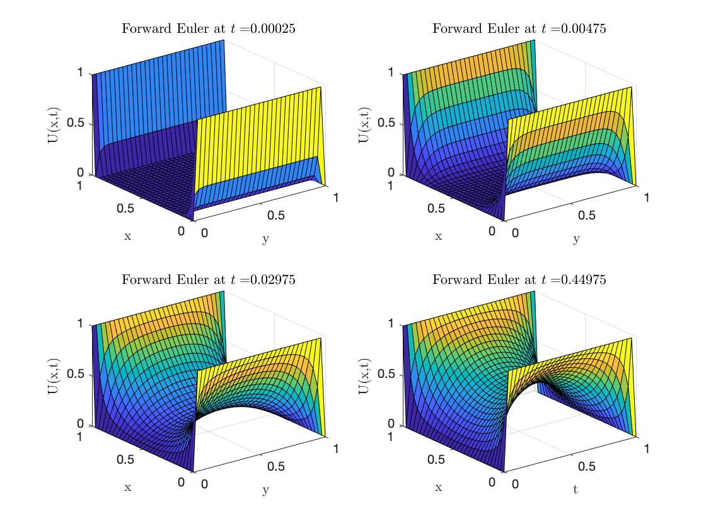
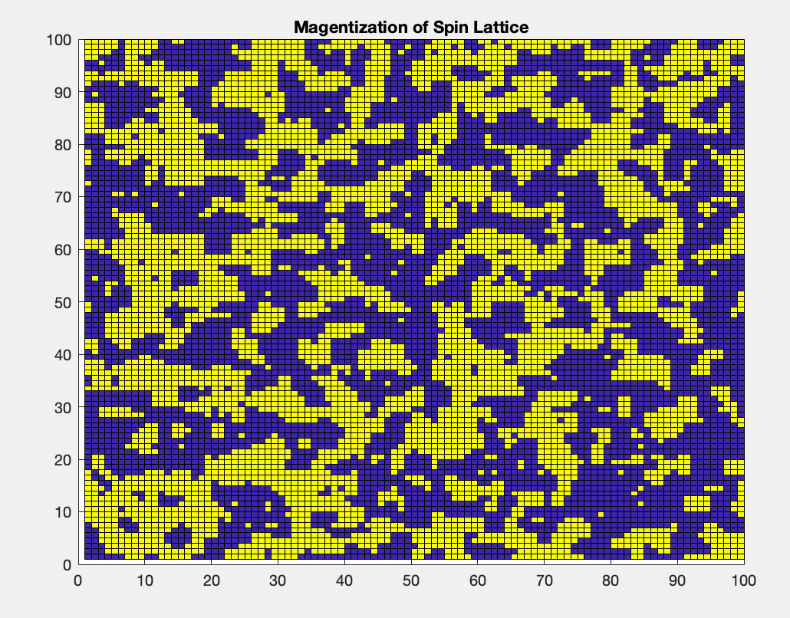

About Me

I am a mathematics graduate student at the University of British Columbia researching the mathematics underlying the quantum Hall effect (which is where the background photo for this website comes from!). I am also a member of the Institute of Applied Mathematics. Fun fact: the quantization of the Hall resistance is so precise and experimentally repeatable that the Ohm is now defined as (a multiple of) one of these quantization units!
Besides physics, I am also passionate about machine learning and mathematical modelling. I have spent the past few years working summers (and also an 8 month contract) as an assistant physicist at C-Therm Technologies, a company in Fredericton, NB, Canada which delivers thermal analysis solutions. Probably my largest acheivement was being almost completely responsible for the software implementation of the mathematics/regression algorithm for their Flex Transient Plane Source sensor. I also contributed to multiple ongoing R&D projects.
Beyond academics, I love playing guitar, watching hockey, and playing board games.
MSc Mathematics: University of British Columbia (August 2022).
BSc Hons. Mathematics-Physics: University of New Brunswick (December 2019).
Research Interests: Quantum Hall effect, Quantum lattice systems, Iterated Function System (IFS) Fractals.
Projects

Please feel free to browse by clicking on the links to my projects, which range from small personal interests to my thesis.
Master's Thesis (click here)
A work in progress. I am researching the quantum Hall effect in the interacting setting using quantum lattice theory.
Detecting Outlier Goal Scoring in the NHL(click here)
A personal machine learning project using data from moneypuck. Uses LASSO, a random forest regressor, and a support vector regressor, ultimately all added to a stacking model, to attempt to learn how many goals a player "deserved to score" in any given season. One can then perform outlier detection; a player is considered an outlier if their goal totals differ drastically from the number of goals the model predicted they would score. The code outputs the top N over/underperformers for any given year, and compares their goal totals to the following season. Most of the time, the players which the model deemed overperformers score significantly less goals the following season, and similarly, underperformers tend to bounce back the following year. Open the file and scroll to the bottom of the page to see a plot of the results.
Diffusion Three Ways (click here)
Solving the 2D diffusion (i.e. heat) equation via forward Euler, backward Euler, and Crank-Nicholson algorithms. MATLAB code available for the 1-dimensional and 2-dimensional cases.
2D Ising Model - Metropolis Algorithm Simulation (click here)
A neat little computational physics project which runs some Ising model magnetization simluations using the Metropolis algorithm. The MATLAB code can be downloaded here, or copy and pasted from the end of the article. It's been a while since I've used this code, and I don't even have access to MATLAB anymore, so I can't guarantee anything (in fact, that goes for pretty much all the MATLAB code you find on this website). Although I do remember it making some very pretty animations!
Undergraduate Thesis (click here)
My honours project on analysis and measure theory on fractals, particularly those which can be represented via iterated function systems, also known as Hutchinson operators.
Chaos in the Driven, Damped Pendulum (click here)
Another computational physics project which uses Runge-Kutta 4 to solve the coupled differential equations governing a driven damped pendulum, which is a chaotic system. The MATLAB code can be found here.
Publications
With C-Therm Technologies: M. Emanuel, M. Bhouri, J. Furlotte, D. Groulx, J. Maassen: Temperature Fields Generated by a Circular Heat Source (CHS) in an Infinite Isotropic Medium: Treatment of Contact Resistances with Application to Thin Films, International Journal of Heat and Mass Transfer 137:677-689 (April 2019).
With C-Therm Technologies (acknowledged as a contributor): M. Emanuel, A. Emanuel: Temperature fields generated by a circular heat source (CHS): Solution of a composite solid of two different isotropic semi-infinite media, Journal of Heat Transfer HT-19-1412 (August 2019).
With C-Therm Technologies (acknowledgd as a contributor): M. Emanuel, M. Bhouri, S. Ackermann, D. Groulx, J. Maassen: Temperature fields generated by a circular heat source (CHS) in an infinite medium: Analytical derivation and comparison to finite element modeling, International Journal of Heat and Mass Transfer 126 (November 2018).
Contact
Email: justin.furlotte@gmail.com